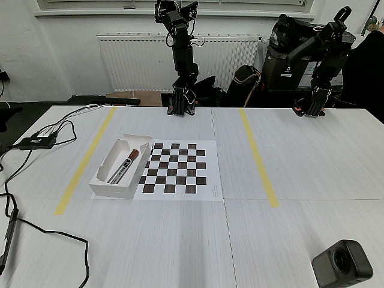
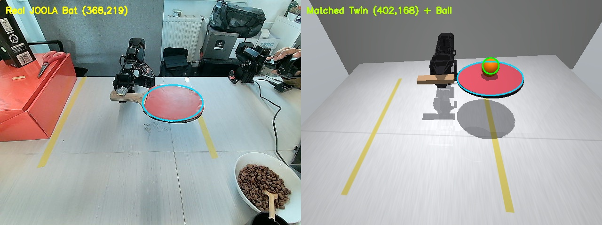

Six Focused Capabilities, Clearly Separated
Autonomous runs are separated strictly from teleoperation datasets. Every clip below is clean 30 fps H.264 camera footage stored locally.
presentation/videos/
System Pipeline — From Live Camera Frame to Verified Physical Action
1. Desk Organisation: Pen & Marker Pick-and-Place
Picking pens and markers from the desk and placing them cleanly inside the white organiser box (~23 s autonomous cycle with stall-tick thickness sensing).
Camera + 7-DoF IK places markers and thin blue pens into the white box, distinguishing thin pens (1397 ticks) from thick markers (1570 ticks).

First autonomous marker run: detected in RGB, grasped via 7-DoF IK, and placed cleanly inside the box.

Gripper stall reading distinguishes thin pens (1397 ticks) from thick markers (1570 ticks) and empty closes (1322 ticks).

Places the marker into the box repeatedly as a person resets it to new positions on the table.
2. Center-Magnet Duster: Bottle-Cap Collection
Because the magnet sits only in the dead center of the duster, the arm aligns that center 1.2 cm over each metal cap without pressing down, verifies a clear table, and drops into the box.
Grasps the duster first try, holds 1.2 cm over each metal cap so the magnet snaps them up with zero pressing, verifies 0 caps remain, and places in the box.

Live segmentation of the duster handle (green) and metal bottle caps (magenta) in milliseconds.

Duster placed in the white box with both metal caps captured underneath on the magnet — zero caps left on the table.
3. Hero Skill: Chained Flip-Top Lid Open & Tissue Extraction
Catching the hinged flip-top lip in a horizontal pass, immediately indexing to the standing fold, and pulling single wet wipes straight out vertically.
One horizontal stroke at z = 10.3 cm pops the flip-top lid open, followed immediately by a top-fold pinch and straight vertical pull.
14.5 cm constant-height lip stroke opens the hinged cap cleanly without shifting the pack, then extracts the sheet.
Pinches the standing tissue tip at z = 7.6 cm and pulls straight up so the pack stays on the table while one sheet comes free.
Sideways lid sweep chained directly into vertical tissue extraction with camera verification.
Camera verification detects an empty pinch and re-indexes automatically until the tissue lifts cleanly.
4. Spill Cleaning & Adaptation: 5-Lane Tissue Wipe -> Smart Packet Push -> Spoon Scoop
From wiping coffee beans in a 5-lane tissue pattern, to intelligently pushing the rigid packet sideways as a squeegee, plus dual-camera 30 fps bowl-to-cup spoon scooping.
Uses the rigid flat side of the packet to push scattered coffee beans 21 cm across the table in one clean pass.
Five parallel table-level strokes with lifted returns clear over 95% of beans from the target work zone.
Grasps the wooden spoon from the bowl, scoops coffee beans, carries across the table, and pours cleanly into the black cup.
Repeatable 30.0 fps dual-camera scoop-and-pour into the black cup.
Locates the wooden handle in RGB, shifts the trajectory to the live bowl pose, grasps under load, and scoops beans across.
5. Side-by-Side Digital Twin & 30 Hz Table-Tennis RL
Synchronised real-vs-MuJoCo digital twin (94% cup benchmark) and our 30 Hz PPO table-tennis ball-balancing policy (95% in twin; real 12 V servos torque-limited under outstretched racket load).
Synchronised side-by-side trajectory replay matching real follower hardware within 6.79 mm mean end-effector error.
Matches real arm trajectories to 6.79 mm; wrist-camera 3D ray alignment reduces +-3 cm calibration error below 5 mm.
Matched 1:1 to our real sideways JOOLA racket grip; recovers smoothly from ball kicks under 0-100 ms camera latency.
Rhythmic keep-up policy trained with hollow-shell ball aerodynamics and anti-buzz bounce gating.

Real follower holding the JOOLA bat sideways (left) matched directly in the MuJoCo 3.2.7 twin (right).